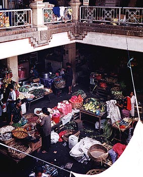

Sent: 17 Jan 2000 04:34 GMT
web version, with
|
|
| Bali is ... a paradise for tourists. |
(Note:) This is the final in a series of Trav-E-Logs© sent while traveling in S.E.Asia between Oct 16, 1999 and Jan 22, 2000. Photos now compliment the Trav-E-Logs©, and a few more pages have been added to accompany other photos.Hi folks,
Just one chapter this time, and the next will probably be from the USA. Thanks to all for putting up with the poor spelling, grammar, etc. When I have more time, I would like to clean up things, and place on a web site, with photos of the trip. More later . . . .
It's now been a week since returning to Bali. The weather has been much better than expected - the sun has been out at least part of every day, with no more than a few hours of rain during some afternoons or evenings. Like every other place in Indonesia, get up at the crack of dawn so you can enjoy the clear, cool mornings.
The days have been filled with shopping, walking, biking, and writing, while attending several performances in the evenings. Kutut, the Hai Home Stay manager and all around worker, invited me to join his family in celebrating Kuningan, when ancestors are bid farewell. Dressed in ceremonial garb, prayers are said Hindu style, at the family temple, as well as at a few local temples. In our case, we visited the moon temple, and the elephant cave temple, both well known in Bali.
I also spent the better part of one day viewing a cremation ceremony for a rather important person, right here in Ubud. Most of the town went without electricity for 4 to 5 hours, as the overhead power lines along the route were disconnected to make way for the tower carried in the funeral procession. Although the cremation rituals last many days, the highly festive procession to the cemetery and burning of the corpse is the part most often seen by tourists. Shortly after noon, the procession consisting of many hundreds of people carrying musical instruments, offerings, ritual objects, a huge multi-tiered tower, and a person riding a sarcophagus in the shape of a huge bull, got underway. Elaborate bamboo structures were required to carry the later two items. The procession started at the football field, traveled up Monkey Forest Road to the main road, turned right past the market, and finally turned right again into the temple grounds by the bus station. The gathering now contains several thousand people. In the huge field by the meeting halls, the bull was placed in an open sided, covered structure, built on a platform. The back of the bull was pried open to gain access to the body cavity, into which many items were placed, including the contents of a wooden coffin, draped with a white cloth. Some of the items were ceremoniously carried around the platform three times, as was the coffin after removing from the tower. Other items removed or released from the tower included two doves, a portrait of the deceased, jars, and many items I could not identify. Sod was placed, grass side down, around the platform to protect from the flames. Both the bull and the tower were set afire. Although I was able to get some photos of the procession, my camera decided to join the deceased during the festivities. Oh well, almost eight years old.
I also run into the Canadians again, Matt and Chris, who tell me they (and Jesper) left Lombok when things got ugly. Rumors are flying around that several Christian Indonesians were killed in Lombok a few days earlier.
One evening I sat down at a local warung (neighborhood restaurant), and struck up a conversation with the fellow next to me. He appeared young, but probably in his early thirties, and on his first trip to Bali from Japan. We both were thinking of biking the countryside the following day, so met at 9 AM the next morning, and headed north, after spending 30 minutes performing maintenance on the rental bikes. After eating lunch, we decided to try to bike up to Gunung Kawi, as long as the weather held out. It is so nice to ride along the backcountry roads, where life is not too heavily influenced by the tourists. Mr. Takt was still very interested in the many craft items for sale when our back roads ended and we had to bike along the highway. He did a fine job resisting temptation, and bartered like a pro during the few times he saw something he really wanted. In some places the road was steep enough that we dismounted and walked the bikes. At close to 3 PM, we decided it was time to start back home to avoid being caught by darkness. Now it was all downhill, and even though we stopped at a few more places, made it to Ubud by 4:30 PM. We decided to sit down for a bite to eat and sort out expenses. I had tentative plans to try and meet Colin and Hilda for dinner, so only wanted a small snack to hold me over.
By 6 PM, we turned the bikes in and bid each other happy traveling. Walked up and down the streets of Ubud, finally gave up on finding Colin and Hilda. Close to home, at 7:30, in front of a performance hall, I hear "Hi Bill." I still have chain oil on my calves from the bicycle, so take a 5 minute detour to wash my legs. The stars are out, so decide to take nothing but my wallet, flashlight, and insect repellent to dinner. We select the garden setting of an up-scale restaurant, overlooking a rural area of Ubud. For our light meal, we order soup, salad, and drink. Mine is served in a scooped out pineapple shell, with lots of coconut shavings on top. I'm going to miss this food. As we eat, it starts to rain lightly, so we move under the roof, reminiscing about our 5 days together, and future plans. As we pay our bills and say our final good-byes, the stars are out again.
=======
Back Soon! Save me a dance!
Bill E-mail Bill: